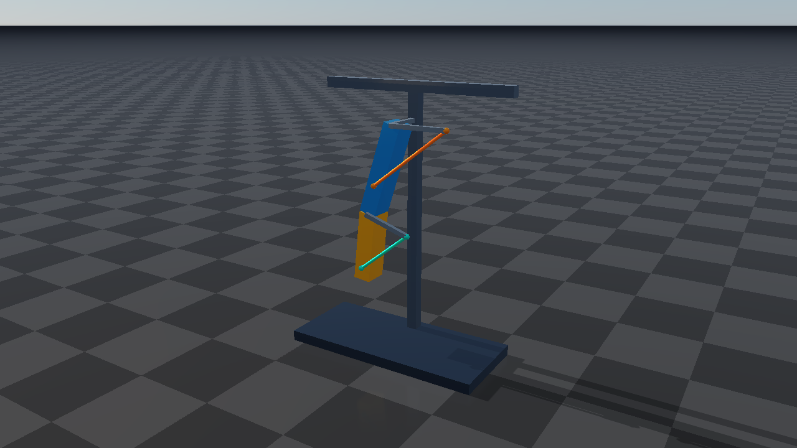
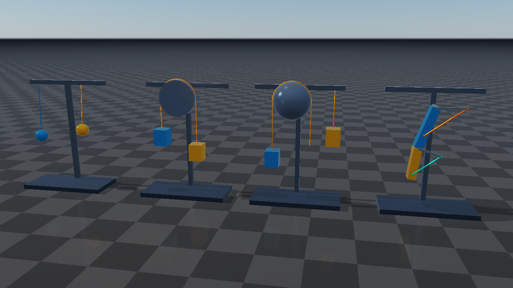

Tendon examples and Rayrai
For short C++ examples of individual features, including length locks, bounded force control, and the existing wire API, start with Tendon code examples.
The examples use procedural primitives and embedded URDF descriptions, so they
need no external robot or texture assets. Their source lives under
examples/src/server/dynamics and examples/src/rayrai/dynamics in the
raisim2Lib distribution. Shared construction and control code is in
examples/include/tendon_scenes.hpp; embedded mechanisms are in
tendon_models.hpp.
What each example demonstrates
Target |
Behavior to inspect |
|---|---|
|
Two suspended loads with equal springs but different damping. The spring interval is [0, 1.1], stiffness is 70, damping is 0.8 versus 7, friction loss is 0.05, armature is 0.04, and the independent upper length bound is 2.15. The lower-damped load oscillates longer. |
|
Two stations: a cylinder-wrapped cable between loads, and sphere wrapping followed by an independent divisor-2 branch. An exterior side site keeps each overhead route selected. A fixed tendon servos one slider at each station; the length-limited spatial cable transmits motion to the other load. |
|
A two-link mechanism driven through the weighted coordinate
|
|
The same constructions in one local window. Select a scene, pause, single-step, reset, change speed, and inspect live tendon values. |
The combined scene contains nine tendons and one coupling. Six spatial tendons produce visible cables; the three fixed tendons provide joint transmissions. All moving bodies respond to simulated forces and constraints. The controller changes servo targets instead of assigning animated body poses.
{kind=link}

The coupling cables above are the actual spatial routes used by the constraint.
Earlier revisions of tendon_coupling coupled only fixed joint coordinates,
so they had no cable lines. Rebuild tendon_coupling and rayrai_tendons
and restart the program to see this revised scene. Fixed tendons in general
still have no spatial route of their own.
Build and run
From the raisim2Lib root on Linux:
cmake -S . -B /tmp/raisim-tendon-examples \
-DCMAKE_BUILD_TYPE=Release -DCMAKE_CXX_COMPILER=clang++-20 \
-DRAISIM_EXAMPLE=ON
cmake --build /tmp/raisim-tendon-examples --parallel 12 --target \
tendon_elastic tendon_pulleys tendon_coupling rayrai_tendons
/tmp/raisim-tendon-examples/examples/rayrai_tendons --scene all
Use the platform setup from Build, Test, and Benchmark on macOS and Windows. Omit the
Linux compiler override when using the normal macOS or Visual Studio toolchain.
With Visual Studio, build with --config Release and run .exe files from
BUILD/bin. Use an appropriate temporary/build directory for the host.
CMake checks installed package capabilities and skips unavailable tendon targets
with a message. No release version change is needed to enable the examples.
Normal license discovery applies. Every example accepts
--activation-key /path/to/activation.raisim. --help lists its options
without creating a world.
The three server examples publish on port 8080 by default. Run one and connect
rayrai_tcp_viewer; see Raisim Server and Rayrai TCP Viewer.
--port N changes the requested port and the program prints the actual
listening port. Ctrl-C shuts it down cleanly. Viewer pause and single-step
commands are supported.
./tendon_pulleys --port 8080
./rayrai_tendons --scene elastic
./rayrai_tendons --scene coupling
The local example also accepts --scene pulley and --scene all. Its
length/force display includes fixed tendons: interpret those values as
transmission coordinates and their conjugate forces, according to the selected
joint coefficients, rather than automatically treating them as cable metres
and Newtons.
Automatic tendon visualization
Rayrai draws spatial paths from the current simulated geometry, including via-points, tangent segments, sphere arcs, cylindrical helices, side-site route selection, and independent pulley branches. Each tendon uses an instanced cylinder batch. Curves are tessellated for drawing; that tessellation does not replace the analytic length calculation used by physics.
{kind=link}

The same automatic paths work in a local raisin::RayraiWindow, in a TCP
viewer receiving RaisimServer updates, and in a viewer simulating a loaded
native XML world. Custom cable-rendering code is unnecessary. Fixed tendons have no spatial route to draw. A coupling adds no separate
geometry of its own; its participating spatial tendons supply the visible paths.
auto appearance = cable->getProperties();
appearance.width = 0.012; // Radius in metres.
appearance.color = {1.0, 0.58, 0.08, 1.0};
cable->setProperties(appearance);
Use alpha zero to hide the cable while keeping its physics active. Disabling the tendon hides it and also disables its physics and dependent coupling rows. Changing radius or color does not alter the physical route or forces. Geometry and appearance refresh during scene updates, including while simulation time is paused. Rename/removal, object removal, a world swap, or a TCP reconnect cleans up obsolete drawings.
After scene synchronization, RayraiWindow::getTendonVisual(name) exposes the
generated batch for inspection. Rayrai owns and refreshes its geometry and
appearance. Ordinary viewer and external Camera captures include these
batches when visualization objects are enabled. RaiSim RGB/depth sensor overloads
retain their policy of excluding custom visualization objects. Physics ray casts
also do not intersect these massless visualization cables.
The server streams tendons using the existing instanced-polyline constraint category. Drawing geometry is generated during rendering/server updates, rather than tessellated on every headless physics step.
Headless checks and timings
--headless and --benchmark select the same finite simulation mode: no
window, server socket, or real-time pacing. The default is 6,000 steps;
--steps N changes it. These examples use a 1 ms physics timestep and one
simulation thread. Run benchmarks serially:
OMP_NUM_THREADS=1 OPENBLAS_NUM_THREADS=1 MKL_NUM_THREADS=1 \
./tendon_pulleys --benchmark --steps 20000
./rayrai_tendons --headless --scene all --steps 6000
Each run reports elapsed simulation-loop time, microseconds per step, tendon and coupling counts, maximum length/coupling errors, and maximum length change. The measured loop includes control updates and diagnostic geometry refreshes. It excludes scene construction and rendering. The examples reject nonfinite state, length-bound violations above 0.01, and coupling residuals above 0.001; runs of at least 1,000 steps also require measurable transmission motion. These are example acceptance thresholds, not general solver accuracy guarantees.
For a reproducible finite rendering/capture run:
./rayrai_tendons --hidden --frames 90 --screenshot /tmp/tendons.png
The showcase on this page uses 90 rendered frames and 1,440 physics steps. Finite-frame and hidden runs use a deterministic 16 ms simulation-time budget per frame. Interactive runs normally follow wall time with the selected speed. A working OpenGL context is still required for hidden rendering.
Export and reload
./tendon_pulleys --headless --steps 0 --export /tmp/tendon-pulleys.xml
./rayrai_tendons --headless --steps 0 --export /tmp/all-tendons.xml
These commands export the initial configuration. The XML retains tendon paths, properties, references, activation state, and current drive configuration. Future C++ servo commands are not part of the exported scene, so loading a file alone does not replay the demo controller. The exported embedded articulated models have URDF sidecars; see Tendon API and model files for path handling.
Register tests with RAISIM_TENDON_EXAMPLE_TESTS=ON. Optionally set
RAISIM_EXAMPLE_ACTIVATION_KEY to pass an explicit license to CTest. After
configuring from the repository root and building the four example targets,
include the export and coupling-check targets:
cmake --build BUILD --target tendon_example_export_check \
tendon_example_coupling_check tendon_example_coupling_tcp_check
ctest --test-dir BUILD/examples -j 12 --output-on-failure -R tendon_example
For a standalone cmake -S examples -B BUILD configuration, use
--test-dir BUILD. On Windows also use --config Release for building and
-C Release for CTest. The checks cover the individual/combined headless
scenes, invalid command-line arguments, XML/URDF export, and a round trip that
compares initial placement and controlled trajectories after 1,200 steps. The
finite Rayrai checks verify generated spatial visuals for the combined and
coupling scenes. A separate test checks that both coupling cables transmit
forces, and another compares their moving routes, radii, and colors after actual
server serialization and TCP viewer parsing. Each graphics test returns skip code 77
if SDL cannot create a graphics context.
For the engine source checkout, the TendonTest.* tests additionally cover
analytic lengths and gradients, moving-guide torques, force signs and ratios,
contact coupling, friction/stiction, implicit stiffness, armature curvature,
polynomial derivatives, particle attachments, enable/removal behavior,
XML/MJCF loading, and checkpoint replay. They can be selected from the engine’s
CTest build with -R TendonTest and the same -j 12 setting. The public
binary distribution’s example tests do not require that source checkout.